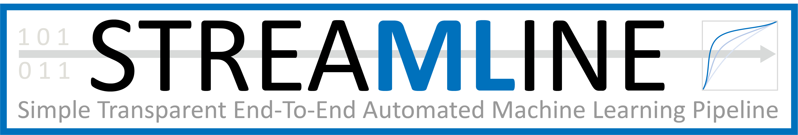
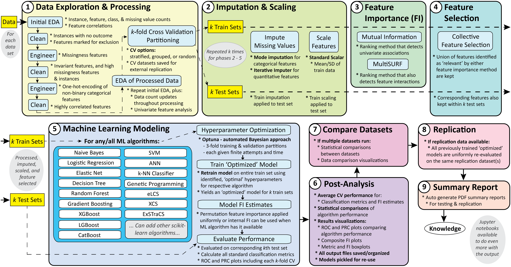

STREAMLINE
Overview
STREAMLINE is an end-to-end automated machine learning (AutoML) pipeline that empowers anyone to easily train, interpret, and apply a variety of predictive models as part of a rigorous and optionally customizable data mining analysis. It is programmed in Python 3 using many common libraries including Pandas and scikit-learn.
The schematic below summarizes the automated STREAMLINE analysis pipeline with individual elements organized into 9 phases.
We recommend reviewing this documentation to gain a deeper understanding of STREAMLINE with respect to it’s overall design, what it includes, how it works, what it can be used for, and implementation highlights that differentiate it from other AutoML tools.
Start with a simple demonstration of STREAMLINE on example biomedical data in our ready-to-run in a Google Colab Notebook here.
Current Limitations
At present, STREAMLINE is limited to supervised learning on tabular, binary classification data. We are currently expanding STREAMLINE to multi-class and regression outcome data.
STREAMLINE also does not automate feature extraction from unstructured data (e.g. text, images, video, time-series data), or handle more advanced aspects of data cleaning or feature engineering that would likely require domain expertise for a given dataset.
As STREAMLINE is currently in its ‘beta’ release, we recommend users first check that they have downloaded the most recent release of STREAMLINE before use. We are actively updating this software as feedback is received.
Disclaimer
We make no claim that this is the best or only viable way to assemble an ML analysis pipeline for a given classification problem, nor that the included ML modeling algorithms will yield the best performance possible. We intend many expansions/improvements to this pipeline in the future. We welcome feedback, suggestions, and contributions for improvement.
Contact
We welcome ideas, suggestions on improving the pipeline, code-contributions, and collaborations!
For general questions, or to discuss potential collaborations (applying, or extending STREAMLINE); contact Ryan Urbanowicz at ryan.urbanowicz@cshs.org.
For questions on the code-base, installing/running STREAMLINE, report bugs, or discuss other troubleshooting issues; contact Harsh Bandhey at harsh.bandhey@cshs.org.
Acknowledgements
The development of STREAMLINE benefited from feedback across multiple biomedical research collaborators at the University of Pennsylvania, Fox Chase Cancer Center, Cedars Sinai Medical Center, and the University of Kansas Medical Center. The bulk of the coding was completed by Ryan Urbanowicz, Robert Zhang and Harsh Bandhey. Special thanks to Yuhan Cui, Pranshu Suri, Patryk Orzechowski, Trang Le, Sy Hwang, Richard Zhang, Wilson Zhang, and Pedro Ribeiro for their code contributions and feedback.
We also thank the following collaborators for their feedback on application of the pipeline during development: Shannon Lynch, Rachael Stolzenberg-Solomon, Ulysses Magalang, Allan Pack, Brendan Keenan, Danielle Mowery, Jason Moore, and Diego Mazzotti.